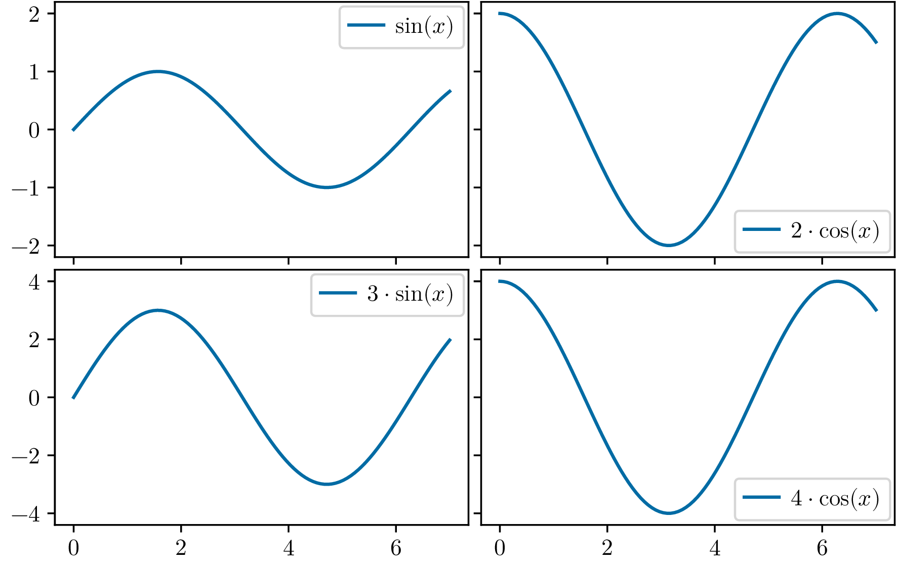
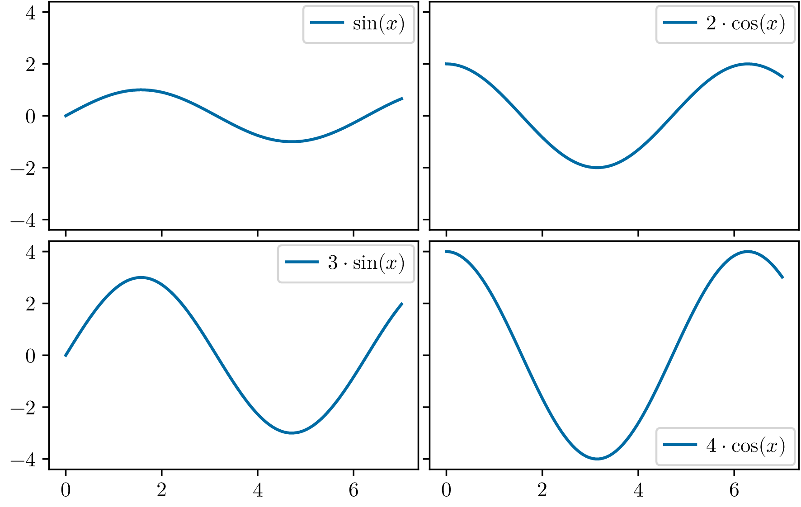

Common y-limits#
This example demonstrates how to set common y-limits for multiple
subplots in a grid layout using the beautiplot library. This is
particularly useful when you want to compare data across different
subplots and ensure that the y-axis scales are consistent, especially
when there are multiple subplots with different data ranges.
We start by importing the necessary libraries and defining the configuration for the plots.
from pathlib import Path
import numpy as np
import beautiplot.plot as bp
from beautiplot import config
root = Path(__file__).parent.parent
config.output_path = root / 'docs/example_plots'
Next, we define the data for the subplots. In this example, we create four subplots, each with different sine and cosine functions. The x values are the same for all subplots, but the y values differ.
x = np.linspace(0, 7, 100)
y1 = np.sin(x)
y2 = 2 * np.cos(x)
y3 = 3 * np.sin(x)
y4 = 4 * np.cos(x)
We then create a new figure with a grid of subplots using the
newfig function. In the beginning, you
need to guess the margins and spacing, but you can adjust them later
if needed.
beautiplot will suggest margin adjustments when saving the figure.
Keep in mind that these adjustments might affect tick labels, so
fixing tick locations can help avoid a cycle of suggestions.
fig, axes = bp.newfig(nrows=2, ncols=2, left=23, bottom=18)
Next, we plot the data on each subplot. We also remove the x-tick labels for the first row and the y-tick labels for the second column to make the plots cleaner.
axes[0, 0].plot(x, y1, label=r'$\sin(x)$')
axes[0, 0].set_xticklabels([])
axes[0, 1].plot(x, y2, label=r'$2\cdot\cos(x)$')
axes[0, 1].set_xticklabels([])
axes[0, 1].set_yticklabels([])
axes[1, 0].plot(x, y3, label=r'$3\cdot\sin(x)$')
axes[1, 1].plot(x, y4, label=r'$4\cdot\cos(x)$')
axes[1, 1].set_yticklabels([])
We add legends to each subplot to identify the functions plotted.
for ax in axes.flat:
bp.legend(ax)
Now, we can set common y-limits for each row of subplots. This ensures that the y-axis scales are consistent across the subplots in each row.
bp.common_lims('y', axes[0, :])
bp.common_lims('y', axes[1, :])
bp.save_figure(fig, 'common_lims_rows.png')

Alternatively, we can set common y-limits for all subplots in the grid. This is useful when you want to compare all subplots directly.
bp.common_lims('y', axes)
bp.save_figure(fig, 'common_lims.png')
